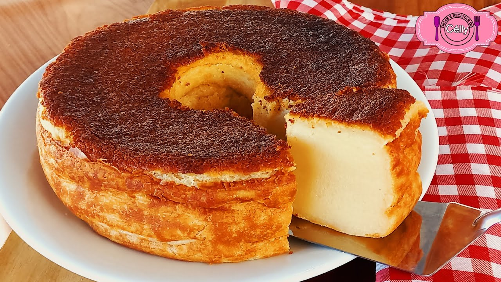

The Gorgeous Milk Cake

Its secret yet simple ingredientmakes all diference
Why should you bake it
This cake is known for its moist and dense texture, thanks to the combination of sweetened condensed milk and whole milk. It's a delightful treat often enjoyed with a cup of coffee or tea.
How it is done
- 1 can (395g) sweetened condensed milk
- 1 can (use the condensed milk can) whole milk
- 3 eggs
- 2 tablespoons unsalted butter, softened
- 1 cup all-purpose flour
- 1 cup granulated sugar
- 1 tablespoon baking powder
- Pinch of salt
Instructions
- Preheat your oven to 350°F (180°C). Grease and flour a cake pan.
- In a blender or food processor, combine the sweetened condensed milk, whole milk, eggs, and softened butter. Blend until well combined.
- In a large mixing bowl, sift together the flour, sugar, baking powder, and a pinch of salt.
- Pour the wet ingredients from the blender into the dry ingredients in the mixing bowl. Mix until you have a smooth batter.
- Pour the batter into the prepared cake pan.
- Bake in the preheated oven for approximately 40-45 minutes or until a toothpick inserted into the center comes out clean.
- Remove the cake from the oven and let it cool in the pan for a few minutes before transferring it to a wire rack to cool completely.
- Once the cake has cooled, you can dust it with powdered sugar or drizzle with a simple glaze if desired.
- Slice and enjoy your delicious Brazilian milk cake!
Visit another recipes
Return to Main Page
Visit Carrot Cake
About